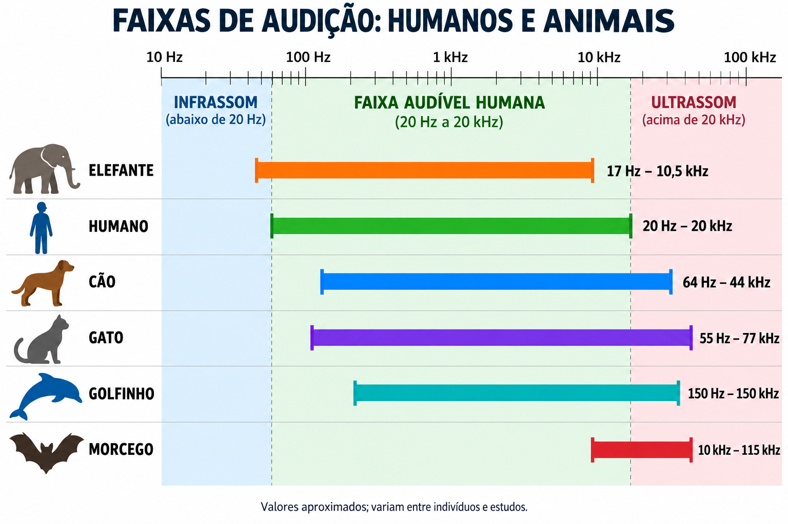
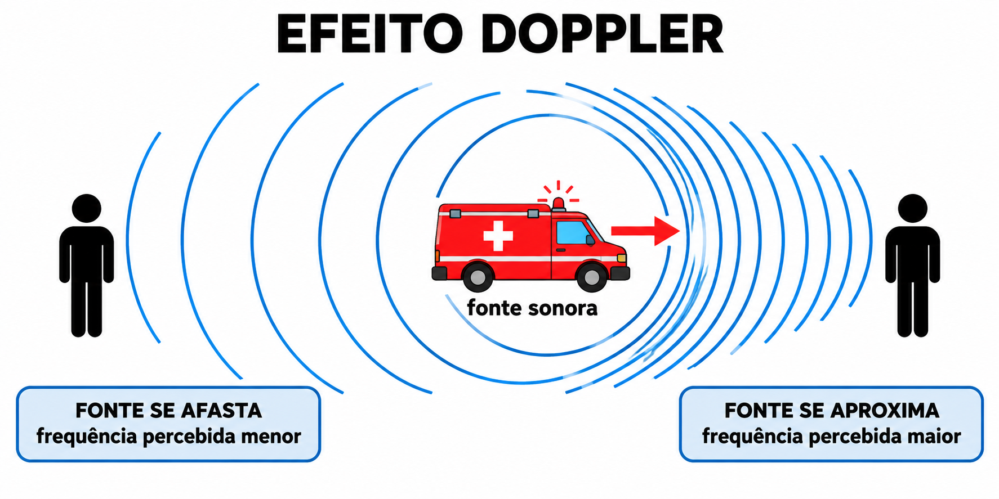

Aula 4 - Acústica e Fenômenos Sonoros
Ondulatória
Objetivos
Ao final desta aula, você deverá ser capaz de:
- Definir o som e reconhecer que ele precisa de meio material.
- Explicar como o som se propaga por compressões e rarefações.
- Relacionar frequência, altura, intensidade, nível sonoro e timbre.
- Descrever noções básicas da fisiologia da audição.
- Diferenciar infrassom, som audível e ultrassom.
- Interpretar reflexão, eco, reverberação e absorção sonora.
- Reconhecer refração, interferência acústica, ondas estacionárias e efeito Doppler em situações acústicas.
- Resolver problemas com \(v=\lambda f\), intensidade, potência sonora, decibéis, interferência acústica, ondas estacionárias em cordas e efeito Doppler.
Introdução
A acústica é a área da Física que estuda o som: sua produção, propagação, recepção e percepção. Ela aparece em salas de aula, auditórios, fones de ouvido, instrumentos musicais, exames de ultrassom, radares sonoros, isolamento acústico e segurança do trabalho.
O som começa com uma fonte vibrante. Essa fonte transfere energia para o meio ao redor, produzindo regiões de compressão e rarefação que se propagam.
Ao estudar acústica, conectamos a descrição física da onda sonora com a experiência humana de ouvir. A frequência está associada à altura, a intensidade está relacionada à sensação de som forte ou fraco, e o timbre permite distinguir fontes diferentes mesmo quando emitem sons de mesma frequência fundamental.
Também é importante separar o fenômeno físico da percepção auditiva. O ouvido transforma variações de pressão em impulsos nervosos, mas a propagação do som depende do meio, da temperatura, da distância até a fonte e das interações com paredes, objetos e aberturas. Por isso, esta aula combina propriedades físicas, fisiologia básica da audição e aplicações como eco, reverberação, interferência acústica, intensidade sonora e efeito Doppler.

Natureza do Som
O som é uma onda mecânica: precisa de meio material e, portanto, não se propaga no vácuo. No ar e em outros fluidos, ele se propaga como uma onda longitudinal.
É mecânica porque precisa de meio material, como ar, água, madeira, concreto ou metal. Não há som no vácuo.
É longitudinal porque as partículas do meio vibram aproximadamente na mesma direção em que a onda se propaga. Em sólidos, também podem existir ondas mecânicas transversais; nesta aula, o foco é o som que se propaga no ar.
No ar, uma fonte sonora comprime e rarefaz sucessivamente as moléculas. Cada molécula oscila em torno de uma posição média; a energia é que se propaga pelo espaço.
Velocidade do Som nos Meios Materiais
A velocidade do som não é a mesma em todos os materiais: ela depende principalmente de quão facilmente o meio se deforma e de sua densidade. De modo geral, as partículas dos sólidos estão mais ligadas entre si e transmitem a vibração mais rapidamente; nos líquidos, a transmissão é intermediária; nos gases, as partículas estão mais afastadas e a propagação costuma ser mais lenta.
Valores aproximados:
- gás — ar a \(20\,^\circ\text{C}\): \(343\,\text{m/s}\);
- líquido — água: \(1500\,\text{m/s}\);
- sólido — aço: cerca de \(5000\,\text{m/s}\).
Assim, em condições usuais, vale a comparação \(v_{\text{sólidos}}>v_{\text{líquidos}}>v_{\text{gases}}\). Isso não significa que todo sólido seja necessariamente mais rápido que todo líquido: o valor exato depende do material e de suas condições. Nos gases, em especial, o aumento da temperatura tende a aumentar a velocidade do som.
Para ondas sonoras periódicas:
\[ \boxed{v=\lambda f} \]
Exemplo numérico. Para uma nota Lá\(_4\) de \(f=440\,\text{Hz}\), propagando-se no ar a \(v=340\,\text{m/s}\):
\[ \lambda=\frac{v}{f}=\frac{340}{440}\approx0{,}77\,\text{m} \]
Ou seja, cada ciclo da onda ocupa cerca de \(77\,\text{cm}\) no ar.
Características Físicas e Perceptivas
Altura
A altura está relacionada à frequência.
- Frequência maior: som mais agudo.
- Frequência menor: som mais grave.

Intensidade
A intensidade sonora é a potência acústica que atravessa uma unidade de área: ela está relacionada à energia transportada por unidade de área e tempo. Na percepção cotidiana, costumamos associar maior intensidade a som mais forte, embora a sensação de volume também dependa da frequência e da sensibilidade do ouvido.

Fisicamente, a intensidade média pode ser calculada por:
\[ I=\frac{P}{A} \]
Exemplo numérico. Se \(P=6\,\text{W}\) atravessam uma área de \(A=3\,\text{m}^2\), então \(I=6/3=2\,\text{W/m}^2\).
em que \(I\) é a intensidade sonora, \(P\) é a potência acústica emitida ou transmitida e \(A\) é a área atravessada pela onda. No Sistema Internacional, \(P\) é medida em watt (W), \(A\) em metro quadrado (\(\text{m}^2\)) e \(I\) em \(\text{W/m}^2\).
Quando uma fonte sonora pequena emite som igualmente em todas as direções, a frente de onda pode ser aproximada por uma esfera. Nesse caso, a área aumenta com a distância:
\[ A=4\pi r^2 \]
Exemplo numérico. A \(r=2\,\text{m}\) de uma fonte puntiforme, \(A=4\pi\cdot2^2=16\pi\approx50{,}3\,\text{m}^2\).
Logo:
\[ I=\frac{P}{4\pi r^2} \]
Exemplo numérico. Para \(P=8\,\text{W}\) e \(r=2\,\text{m}\), \(I=8/(16\pi)\approx0{,}16\,\text{W/m}^2\).
Isso mostra que, ao dobrar a distância até uma fonte ideal, a intensidade cai para um quarto do valor inicial. Essa relação ajuda a explicar por que sons ficam muito mais fracos quando nos afastamos da fonte.
O nível sonoro é medido em decibel (dB), uma escala logarítmica. Para o nível de intensidade sonora:
\[ \boxed{\beta=10\log\left(\frac{I}{I_0}\right)} \]
Exemplo numérico. Se \(I=10^{-7}\,\text{W/m}^2\), então \(\beta=10\log(10^{-7}/10^{-12})=10\log(10^5)=50\,\text{dB}\).
em que \(\beta\) é o nível sonoro em decibel, \(I\) é a intensidade sonora e \(I_0=10^{-12}\,\text{W/m}^2\) é a intensidade de referência, próxima ao limiar de audição humana em \(1000\,\text{Hz}\).
Como a escala é logarítmica, aumentar a intensidade em \(10\) vezes aumenta o nível sonoro em \(10\,\text{dB}\). Aumentar a intensidade em \(100\) vezes aumenta o nível sonoro em \(20\,\text{dB}\). Esses valores descrevem grandezas físicas; não significam que a sensação de volume aumente na mesma proporção.

Timbre
O timbre permite distinguir fontes sonoras diferentes emitindo a mesma nota com a mesma intensidade aproximada. Um violão e uma flauta podem tocar a mesma frequência fundamental, mas produzem harmônicos diferentes.

Música: notas e frequências
No padrão internacional de afinação, a nota Lá\(_4\) corresponde a \(440\,\text{Hz}\). Em temperamento igual, avançar uma oitava dobra a frequência; avançar um semitom multiplica-a por \(2^{1/12}\):
\[ f=f_{\mathrm{L\acute{a}_4}}\,2^{n/12} \]
Exemplo numérico. Uma oitava acima, \(n=12\): \(f=440\cdot2^{12/12}=880\,\text{Hz}\) (Lá\(_5\)).
Aqui, \(n\) é o número de semitons em relação ao Lá\(_4\).
Algumas referências úteis: Sol\(_3\approx196\,\text{Hz}\) (corda sol do violão), Lá\(_4=440\,\text{Hz}\) (diapasão de referência), Dó\(_5\approx523\,\text{Hz}\) e Dó\(_8\approx4186\,\text{Hz}\) (uma das notas mais agudas do piano). Um instrumento altera a frequência ao mudar, por exemplo, o comprimento vibrante de uma corda ou a coluna de ar.
Duração
A duração é o intervalo de tempo durante o qual o som é percebido.
Faixa Audível
O ouvido humano jovem costuma perceber frequências aproximadamente entre:
\[ 20\,\text{Hz} \le f \le 20\,000\,\text{Hz} \]
Exemplo numérico. Um som de \(30\,\text{Hz}\) está na faixa audível; um sinal de \(25\,000\,\text{Hz}\) é ultrassom para a audição humana típica.
- Infrassom
- Frequências abaixo de \(20\,\text{Hz}\).
- Som audível
- Frequências entre cerca de \(20\,\text{Hz}\) e \(20\,000\,\text{Hz}\).
- Ultrassom
- Frequências acima de \(20\,000\,\text{Hz}\).
O ultrassom é usado em exames médicos, limpeza ultrassônica e sensores. O infrassom pode estar associado a fenômenos naturais como terremotos, vulcões e ondas oceânicas.

As faixas variam entre indivíduos, idade e condições de medida. O gráfico é comparativo: cães, gatos, morcegos e alguns mamíferos marinhos, por exemplo, detectam frequências acima do limite humano típico.
Fisiologia do Som
A audição envolve transformação de energia mecânica em sinais nervosos.
- O pavilhão auricular ajuda a coletar o som.
- O canal auditivo conduz a onda sonora até o tímpano.
- O tímpano vibra quando recebe variações de pressão.
- Ossículos da orelha média amplificam e transmitem a vibração.
- A cóclea, na orelha interna, contém fluido e células ciliadas sensíveis a frequências.
- As células ciliadas convertem vibrações em impulsos elétricos.
- O nervo auditivo envia os sinais ao cérebro.
Sons muito intensos podem danificar células ciliadas. Esse dano pode ser permanente, por isso a exposição prolongada a fones em volume alto, shows, máquinas e sirenes exige cuidado.
Reflexão, Eco e Reverberação
A reflexão sonora ocorre quando o som encontra uma superfície e retorna ao meio de origem.

Sonar: reflexão usada para medir distâncias
O sonar ativo emite um pulso de som na água e registra o eco refletido por um objeto ou pelo fundo. Como o pulso percorre o caminho de ida e volta, a distância até o alvo é metade do percurso calculado:
\[ d=\frac{v\Delta t}{2} \]
Exemplo numérico. Se o eco retorna em \(\Delta t=0{,}40\,\text{s}\) e \(v=1500\,\text{m/s}\) na água, então \(d=(1500\cdot0{,}40)/2=300\,\text{m}\).
Aqui, \(v\) é a velocidade do som na água e \(\Delta t\) é o intervalo entre a emissão do pulso e a chegada do eco.
Navios, submarinos e embarcações de pesquisa usam esse princípio para localizar obstáculos, mapear o fundo e estimar profundidades. É a mesma ideia física do eco, mas com um pulso controlado e a medida precisa do tempo de retorno.
- Eco
- O som refletido chega separado do som direto por tempo suficiente para ser percebido como repetição.
- Reverberação
- Muitas reflexões chegam muito próximas no tempo, prolongando o som sem formar repetições separadas.
- Transmissão sonora
- Parte da onda pode atravessar a superfície e passar para outro meio. A quantidade refletida e transmitida depende dos materiais envolvidos.
- Absorção sonora
- Parte da energia sonora é transformada em energia interna no material. Espumas acústicas, cortinas e carpetes podem reduzir reflexões.
Em salas de aula, excesso de reverberação dificulta a compreensão da fala. Em teatros, a acústica busca equilíbrio entre clareza e sustentação sonora.
Refração Sonora
A refração sonora ocorre quando o som passa por regiões em que sua velocidade muda, como camadas de ar com temperaturas diferentes.

A frequência é determinada pela fonte e tende a permanecer constante. Se a velocidade muda, o comprimento de onda também muda.
Em noites frias, por exemplo, variações de temperatura no ar podem curvar a trajetória do som e alterar o alcance de ruídos distantes.
Interferência Acústica
A interferência acústica ocorre quando duas ou mais ondas sonoras chegam ao mesmo ponto ao mesmo tempo. Pelo princípio da superposição, a perturbação resultante é a soma das perturbações produzidas por cada onda.

Em acústica, isso pode produzir regiões onde o som fica mais forte e regiões onde o som fica mais fraco.
- Interferência construtiva
- Ocorre quando as ondas chegam em fase. As compressões coincidem com compressões e as rarefações coincidem com rarefações. A amplitude resultante aumenta.
- Interferência destrutiva
- Ocorre quando as ondas chegam em oposição de fase. Uma compressão pode coincidir com uma rarefação. A amplitude resultante diminui.
Para duas fontes coerentes emitindo sons de mesmo comprimento de onda, a diferença de caminho \(\Delta d\) ajuda a prever o tipo de interferência:
\[ \Delta d=|d_2-d_1| \]
Exemplo numérico. Se \(d_1=2{,}6\,\text{m}\) e \(d_2=3{,}4\,\text{m}\), então \(\Delta d=|3{,}4-2{,}6|=0{,}8\,\text{m}\).
Interferência construtiva:
\[ \Delta d=n\lambda \]
Exemplo numérico. Para \(\lambda=0{,}40\,\text{m}\) e \(n=2\), a condição de reforço é \(\Delta d=2\cdot0{,}40=0{,}80\,\text{m}\).
Interferência destrutiva:
\[ \Delta d=\left(n+\frac{1}{2}\right)\lambda \]
Exemplo numérico. Para \(\lambda=0{,}40\,\text{m}\) e \(n=1\), a condição de cancelamento é \(\Delta d=(1+1/2)\cdot0{,}40=0{,}60\,\text{m}\).
em que \(n=0,1,2,\ldots\)
Aplicações aparecem em acústica de salas, posicionamento de caixas de som, cancelamento ativo de ruído e regiões de reforço ou enfraquecimento sonoro em ambientes.
Ressonância Acústica
Ressonância ocorre quando uma fonte externa excita um sistema em uma de suas frequências naturais. Nessa condição, a transferência de energia é mais eficiente e a amplitude da vibração pode aumentar muito.
Em colunas de ar, a ressonância produz ondas estacionárias. O tubo de Kundt torna esse padrão visível: o pó se acumula nos nós, pontos de menor deslocamento do ar. A distância entre dois nós consecutivos é \(\lambda/2\).

Para uma coluna de ar aberta nas duas extremidades, desprezando a correção de extremidade:
\[ f_n=\frac{nv}{2L},\qquad n=1,2,3,\ldots \]
Exemplo numérico. Em um tubo aberto de \(L=0{,}85\,\text{m}\), com \(v=340\,\text{m/s}\), o modo fundamental (\(n=1\)) é \(f_1=340/(2\cdot0{,}85)=200\,\text{Hz}\).
Para uma coluna aberta em uma extremidade e fechada na outra:
\[ f_n=\frac{(2n-1)v}{4L},\qquad n=1,2,3,\ldots \]
Exemplo numérico. Para uma garrafa idealizada como tubo fechado de \(L=0{,}85\,\text{m}\), o modo fundamental é \(f_1=340/(4\cdot0{,}85)=100\,\text{Hz}\).
Assim, tubos abertos admitem todos os harmônicos, enquanto tubos fechados em uma extremidade admitem apenas os harmônicos ímpares. Soprar em uma garrafa, tocar uma flauta ou ajustar uma caixa acústica são exemplos relacionados à ressonância.
Ondas Estacionárias em Cordas e Instrumentos
Instrumentos musicais produzem sons por modos de vibração.

Em cordas, aparecem nós e ventres. O comprimento da corda, a tensão e a densidade linear influenciam a velocidade de propagação da onda na corda e, portanto, a frequência emitida. Em instrumentos de sopro, o equivalente são as ondas estacionárias na coluna de ar, discutidas na seção de ressonância.
Para uma corda fixa nas duas extremidades:
\[ f_1=\frac{v}{2L} \]
Exemplo numérico. Uma corda de \(L=1{,}0\,\text{m}\), na qual a onda se propaga a \(v=200\,\text{m/s}\), tem \(f_1=200/(2\cdot1{,}0)=100\,\text{Hz}\).
Para harmônicos:
\[ f_n=n f_1 \]
Exemplo numérico. Se \(f_1=100\,\text{Hz}\), o terceiro harmônico é \(f_3=3\cdot100=300\,\text{Hz}\).
Mach, jatos e a barreira do som
O número de Mach compara a velocidade de um objeto com a velocidade local do som:
\[ M=\frac{u}{v_{\text{som}}} \]
Exemplo numérico. Se um avião voa a \(u=680\,\text{m/s}\) em uma região onde \(v_{\text{som}}=340\,\text{m/s}\), então \(M=680/340=2\): ele voa a Mach 2.
Como a velocidade do som depende da temperatura e da altitude, Mach 1 não corresponde sempre ao mesmo valor em km/h. Perto do nível do mar, tomando \(v_{\text{som}}\approx340\,\text{m/s}\), Mach 1 equivale aproximadamente a \(1220\,\text{km/h}\); Mach 2 e Mach 3 correspondem, aproximadamente, ao dobro e ao triplo desse valor.

Curiosidade. O X-15 não era um jato convencional, mas uma aeronave-foguete. Em 3 de outubro de 1967, Pete Knight atingiu Mach 6,7 (cerca de \(7240\,\text{km/h}\)), marca histórica para uma aeronave tripulada com asas. Em velocidades supersônicas, as perturbações do ar se acumulam em ondas de choque; ao chegarem ao solo, podem ser percebidas como estrondo sônico.
Efeito Doppler
O efeito Doppler é a mudança da frequência percebida quando existe movimento relativo entre fonte e observador.

Quando a fonte se aproxima, as frentes de onda chegam mais próximas umas das outras. A frequência percebida aumenta e o som fica mais agudo.
Quando a fonte se afasta, as frentes de onda chegam mais espaçadas. A frequência percebida diminui e o som fica mais grave.
Exemplo: a sirene de uma ambulância parece mais aguda ao se aproximar e mais grave depois que passa.
Para som no ar, a frequência percebida pode ser calculada por:
\[ \boxed{f'=f\left(\frac{v\pm v_o}{v\mp v_s}\right)} \]
Exemplo numérico. Com fonte parada (\(v_s=0\)), observador aproximando-se a \(v_o=10\,\text{m/s}\), som emitido em \(f=600\,\text{Hz}\) e \(v=340\,\text{m/s}\):
\[ f'=600\left(\frac{340+10}{340}\right)\approx618\,\text{Hz} \]
em que \(f'\) é a frequência percebida, \(f\) é a frequência emitida, \(v\) é a velocidade do som, \(v_o\) é a velocidade do observador e \(v_s\) é a velocidade da fonte.
Convenção prática:
- observador aproximando-se da fonte: usar \(v+v_o\) no numerador;
- observador afastando-se da fonte: usar \(v-v_o\) no numerador;
- fonte aproximando-se do observador: usar \(v-v_s\) no denominador;
- fonte afastando-se do observador: usar \(v+v_s\) no denominador.
Se o observador está parado e a fonte se move:
\[ f'_\text{aproxima}=\frac{fv}{v-v_s} \]
Exemplo numérico. Para \(f=700\,\text{Hz}\), \(v=340\,\text{m/s}\) e \(v_s=20\,\text{m/s}\), \(f'_\text{aproxima}=700\cdot340/(340-20)\approx744\,\text{Hz}\).
\[ f'_\text{afasta}=\frac{fv}{v+v_s} \]
Exemplo numérico. Mantendo os mesmos valores, \(f'_\text{afasta}=700\cdot340/(340+20)\approx661\,\text{Hz}\).
Exemplos Resolvidos
Exemplo 4.1 - Comprimento de Onda
Um som de \(440\,\text{Hz}\) se propaga no ar com velocidade \(340\,\text{m/s}\). Determine o comprimento de onda.
\[ \lambda=\frac{v}{f}=\frac{340}{440}\approx0{,}77\,\text{m} \]
Resposta: \(\lambda\approx0{,}77\,\text{m}\).
Exemplo 4.2 - Interferência Construtiva
Duas caixas de som coerentes emitem ondas sonoras de comprimento de onda \(\lambda=0{,}80\,\text{m}\). Em certo ponto da sala, as distâncias até as caixas são \(d_1=3{,}20\,\text{m}\) e \(d_2=4{,}00\,\text{m}\). Verifique se ocorre interferência construtiva.
\[ \Delta d=|d_2-d_1|=|4{,}00-3{,}20|=0{,}80\,\text{m} \]
Como:
\[ \Delta d=0{,}80\,\text{m}=\lambda \]
temos \(\Delta d=1\lambda\), portanto ocorre interferência construtiva.
Resposta: sim, ocorre reforço sonoro nesse ponto.
Exemplo 4.3 - Eco
Uma pessoa grita diante de uma parede a \(170\,\text{m}\) de distância. Considere \(v=340\,\text{m/s}\). Quanto tempo o som leva para voltar?
O som vai até a parede e retorna:
\[ \Delta s=2\cdot170=340\,\text{m} \]
\[ \Delta t=\frac{\Delta s}{v}=\frac{340}{340}=1\,\text{s} \]
Resposta: o eco retorna após \(1\,\text{s}\).
Exemplo 4.4 - Intensidade de Fonte Esférica
Uma fonte sonora emite potência acústica \(P=12\,\text{W}\) igualmente em todas as direções. Desprezando perdas no ar, calcule a intensidade a \(r=1\,\text{m}\) da fonte. Use \(\pi\approx3\).
\[ A=4\pi r^2=4\cdot3\cdot1^2=12\,\text{m}^2 \]
\[ I=\frac{P}{A}=\frac{12}{12}=1\,\text{W/m}^2 \]
Resposta: \(1\,\text{W/m}^2\).
Exemplo 4.5 - Potência a Partir da Intensidade
Uma onda sonora atravessa uma área de \(8\,\text{m}^2\) com intensidade média \(I=0{,}50\,\text{W/m}^2\). Determine a potência sonora transmitida por essa área.
\[ I=\frac{P}{A} \]
\[ P=IA=0{,}50\cdot8=4\,\text{W} \]
Resposta: \(4\,\text{W}\).
Exemplo 4.6 - Nível Sonoro em Decibéis
Um som tem intensidade \(I=10^{-8}\,\text{W/m}^2\). Calcule o nível sonoro. Use \(I_0=10^{-12}\,\text{W/m}^2\).
\[ \beta=10\log\left(\frac{I}{I_0}\right) \]
\[ \beta=10\log\left(\frac{10^{-8}}{10^{-12}}\right) =10\log(10^4) =10\cdot4 =40\,\text{dB} \]
Resposta: \(40\,\text{dB}\).
Exemplo 4.7 - Intensidade a Partir do Decibel
Um som apresenta nível sonoro \(\beta=70\,\text{dB}\). Determine sua intensidade. Use \(I_0=10^{-12}\,\text{W/m}^2\).
\[ 70=10\log\left(\frac{I}{10^{-12}}\right) \]
\[ 7=\log\left(\frac{I}{10^{-12}}\right) \]
\[ \frac{I}{10^{-12}}=10^7 \]
\[ I=10^7\cdot10^{-12}=10^{-5}\,\text{W/m}^2 \]
Resposta: \(10^{-5}\,\text{W/m}^2\).
Exemplo 4.8 - Doppler com Fonte Aproximando-se
Uma ambulância emite sirene de \(700\,\text{Hz}\) e se aproxima de um observador parado com velocidade \(v_s=20\,\text{m/s}\). Considere \(v=340\,\text{m/s}\). Determine a frequência percebida.
\[ f'=\frac{fv}{v-v_s} \]
\[ f'=\frac{700\cdot340}{340-20} =\frac{238000}{320} \approx744\,\text{Hz} \]
Resposta: aproximadamente \(744\,\text{Hz}\), som mais agudo.
Exemplo 4.9 - Doppler com Fonte Afastando-se
A mesma ambulância emite \(700\,\text{Hz}\), mas agora se afasta do observador parado com \(v_s=20\,\text{m/s}\). Considere \(v=340\,\text{m/s}\).
\[ f'=\frac{fv}{v+v_s} \]
\[ f'=\frac{700\cdot340}{340+20} =\frac{238000}{360} \approx661\,\text{Hz} \]
Resposta: aproximadamente \(661\,\text{Hz}\), som mais grave.
Exemplo 4.10 - Onda Estacionária em Corda
Uma corda fixa nas duas extremidades tem comprimento \(L=0{,}80\,\text{m}\). A velocidade da onda na corda é \(v=320\,\text{m/s}\). Determine a frequência fundamental.
\[ f_1=\frac{v}{2L} \]
\[ f_1=\frac{320}{2\cdot0{,}80} =\frac{320}{1{,}60} =200\,\text{Hz} \]
Resposta: \(200\,\text{Hz}\).
Exemplo 4.11 - Interferência Destrutiva
Dois alto-falantes coerentes emitem som de comprimento de onda \(\lambda=0{,}60\,\text{m}\). Em um ponto, a diferença de caminho é \(\Delta d=0{,}30\,\text{m}\). Determine o tipo de interferência.
\[ \Delta d=0{,}30\,\text{m}=\frac{0{,}60}{2} \]
\[ \Delta d=\frac{\lambda}{2} \]
Como a diferença de caminho é meio comprimento de onda, as ondas chegam em oposição de fase.
Resposta: interferência destrutiva.
Exemplo 4.12 - Doppler Qualitativo
Uma motocicleta com escapamento ruidoso se aproxima e depois se afasta de um observador parado. Como a altura percebida muda?
Resolução: na aproximação, a frequência percebida aumenta; no afastamento, diminui.
Resposta: som mais agudo na aproximação e mais grave no afastamento.
Exemplo 4.13 - Ressonância em Tubo Aberto
Um tubo aberto nas duas extremidades tem comprimento \(L=0{,}85\,\text{m}\). Considerando \(v=340\,\text{m/s}\), determine sua frequência fundamental.
\[ f_1=\frac{v}{2L}=\frac{340}{2\cdot0{,}85}=200\,\text{Hz} \]
Resposta: \(200\,\text{Hz}\).
Erros Comuns
- Confundir altura com intensidade.
- Dizer que som se propaga no vácuo.
- Usar decibel como escala linear.
- Pensar que timbre depende apenas do volume.
- Confundir eco com reverberação.
- Confundir interferência construtiva com destrutiva.
- Dizer que Doppler muda a frequência emitida pela fonte; ele muda a frequência percebida.
- Tratar uma gravação no computador como a própria onda no ar: o microfone converte as variações de pressão em sinal elétrico.
Exercícios de Fixação
- 4.1)
- Um som de \(680\,\text{Hz}\) se propaga no ar com \(v=340\,\text{m/s}\). Seu comprimento de onda é:
- \(0{,}50\,\text{m}\).
- \(2{,}00\,\text{m}\).
- \(462\,\text{m}\).
- \(1020\,\text{m}\).
- \(680\,\text{m}\).
- 4.2)
- Dois sons têm frequências \(330\,\text{Hz}\) e \(660\,\text{Hz}\). O som de \(660\,\text{Hz}\) é percebido como:
- mais intenso obrigatoriamente.
- mais agudo.
- mais lento no mesmo ar.
- sem timbre.
- infrassom.
- 4.3)
- Uma onda sonora transporta potência \(P=18\,\text{W}\) através de uma área de \(6\,\text{m}^2\). A intensidade sonora média nessa área é:
- \(108\,\text{W/m}^2\).
- \(24\,\text{W/m}^2\).
- \(12\,\text{W/m}^2\).
- \(3\,\text{W/m}^2\).
- \(\frac{1}{3}\,\text{W/m}^2\).
- 4.4)
- Um som tem intensidade \(I=10^{-9}\,\text{W/m}^2\). Usando \(I_0=10^{-12}\,\text{W/m}^2\), seu nível sonoro é:
- \(3\,\text{dB}\).
- \(9\,\text{dB}\).
- \(30\,\text{dB}\).
- \(90\,\text{dB}\).
- \(120\,\text{dB}\).
- 4.5)
- Um violão e uma flauta tocam a mesma nota, na mesma intensidade aproximada, mas soam diferentes principalmente porque:
- o som se propaga mais rápido no violão.
- os instrumentos produzem harmônicos diferentes.
- a frequência deixa de existir na flauta.
- a onda sonora se torna eletromagnética.
- a altura sempre é maior no violão.
- 4.6)
- Uma frequência de \(18\,\text{Hz}\) está:
- acima da faixa audível e é ultrassom.
- na região audível de maior sensibilidade.
- abaixo da faixa audível humana típica e é infrassom.
- sempre associada a eco.
- sem relação com ondas sonoras.
- 4.7)
- Em um sonar, um pulso retorna após \(0{,}50\,\text{s}\). Considere a velocidade do som na água igual a \(1480\,\text{m/s}\). A distância até o alvo é:
- \(185\,\text{m}\).
- \(370\,\text{m}\).
- \(740\,\text{m}\).
- \(1480\,\text{m}\).
- \(2960\,\text{m}\).
- 4.8)
- Duas fontes coerentes emitem som de comprimento de onda \(\lambda=0{,}70\,\text{m}\). Em um ponto, a diferença de caminho é \(\Delta d=0{,}35\,\text{m}\). Nesse ponto ocorre:
- interferência construtiva, pois \(\Delta d=\lambda\).
- eco, pois \(\Delta d=2\lambda\).
- interferência destrutiva, pois \(\Delta d=\lambda/2\).
- refração, pois a frequência mudou.
- efeito Doppler, pois a fonte está parada.
- 4.9)
- Uma coluna de ar aberta em uma extremidade e fechada na outra tem comprimento \(L=0{,}66\,\text{m}\). Considerando \(v=330\,\text{m/s}\), sua frequência fundamental é:
- \(62{,}5\,\text{Hz}\).
- \(125\,\text{Hz}\).
- \(250\,\text{Hz}\).
- \(330\,\text{Hz}\).
- \(500\,\text{Hz}\).
- 4.10)
- Uma sirene emite \(540\,\text{Hz}\) e se aproxima de um observador parado com \(v_s=15\,\text{m/s}\). Considere \(v=330\,\text{m/s}\). A frequência percebida é aproximadamente:
- \(515\,\text{Hz}\).
- \(540\,\text{Hz}\).
- \(566\,\text{Hz}\).
- \(615\,\text{Hz}\).
- \(675\,\text{Hz}\).
- 4.11)
- Um avião voa a \(u=990\,\text{m/s}\) em uma região onde a velocidade do som é \(330\,\text{m/s}\). Seu número de Mach é:
- \(0{,}3\).
- \(1\).
- \(2\).
- \(3\).
- \(300\).
- 4.12)
- Em uma gravação, duas cristas consecutivas estão separadas por \(T=0{,}0080\,\text{s}\). A frequência medida é:
- \(8\,\text{Hz}\).
- \(80\,\text{Hz}\).
- \(100\,\text{Hz}\).
- \(125\,\text{Hz}\).
- \(800\,\text{Hz}\).
Atividade de Encerramento — voz e ondas sonoras no Audacity
O Audacity é um editor de áudio livre. Nesta atividade, o microfone transforma as variações de pressão do som em um sinal elétrico, que o programa exibe em função do tempo. A frequência será obtida diretamente pela medida do período na forma de onda.
Objetivo
Estimar a frequência de vogais sustentadas, comparar vozes e relacionar forma de onda, período e frequência.
Material e procedimento
- Em grupos, use um computador com Audacity e microfone. Mantenham a mesma distância aproximada do microfone e evitem ruído de fundo.
- Grave de 3 a 5 segundos da vogal “a” sustentada, em volume confortável e sem gritar. Cada estudante pode repetir a gravação duas vezes.
- Selecione um trecho central estável, sem o início e o final da emissão.
- Amplie a escala de tempo até distinguir duas cristas consecutivas e selecione o intervalo entre elas.
- Leia os instantes inicial e final da seleção na régua superior, calcule o período \(T\) e, em seguida, a frequência \(f=1/T\).
- Registre a frequência obtida e compare as duas tentativas.
Método — frequência pelo período da forma de onda
Amplie a escala de tempo até distinguir duas cristas consecutivas. Leia os instantes \(t_1\) e \(t_2\) dessas cristas na régua superior. O período é o intervalo de tempo entre elas:
\[ T=t_2-t_1 \]
Aplicação no gráfico. Para \(t_1=5{,}6963\,\text{s}\) e \(t_2=5{,}7065\,\text{s}\), temos \(T=5{,}7065-5{,}6963=0{,}0102\,\text{s}\).
e a frequência é:
\[ \boxed{f=\frac{1}{T}} \]
Aplicação no gráfico. Usando \(T=0{,}0102\,\text{s}\), obtemos \(f=1/0{,}0102\approx\boxed{98\,\text{Hz}}\).

Registro e discussão
Monte uma tabela com: estudante (ou código), vogal, instantes \(t_1\) e \(t_2\), período \(T\), frequência \(f\) e observações. Discuta:
- Por que a voz não é uma senoide pura?
- Por que duas pessoas podem emitir a mesma nota e ainda assim soar diferentes?
- O que acontece com o espaçamento entre ciclos quando a voz fica mais aguda?
Não é necessário compartilhar arquivos de voz: cada grupo pode apagar as gravações ao final da atividade. Use um trecho estável e amplie a escala de tempo para tornar a leitura dos dois picos mais precisa.
Para assistir — submarinos, sonar e tensão no oceano
Os filmes abaixo usam submarinos, comunicação acústica e detecção por sonar como elementos da narrativa. Eles são ficção e dramatizam situações militares; ao assistir, procure identificar onde aparecem ecos, ruídos do ambiente e a interpretação de sinais sonoros.
- A Caçada ao Outubro Vermelho (1990)
- Durante a Guerra Fria, o comandante soviético Marko Ramius conduz o avançado submarino Outubro Vermelho em direção aos Estados Unidos. Sem saber se ele pretende desertar ou atacar, soviéticos e norte-americanos iniciam uma caçada submarina, enquanto o analista Jack Ryan tenta decifrar suas intenções. Trailer legendado em PT-BR.
- Alerta Lobo (2019)
- Chanteraide é o “ouvido de ouro” de um submarino francês: sua tarefa é reconhecer embarcações e perigos a partir dos sons captados pelo sonar. Depois de cometer um erro, ele precisa recuperar a confiança da equipe em meio a uma crise internacional que pode escalar para um conflito nuclear. Trailer dublado em PT-BR.
- Fúria em Alto Mar (2018)
- O capitão Joe Glass recebe a missão de investigar o desaparecimento de um submarino americano no Mar de Barents. A operação se transforma em uma tentativa de impedir um golpe militar e resgatar o presidente russo antes que uma guerra entre potências seja iniciada. Trailer dublado em PT-BR.
Materiais complementares


Referências
- BONJORNO, José Roberto; RAMOS, Clinton; BONJORNO, Regina. Física: termologia, óptica e ondas. São Paulo: FTD.
- HEWITT, Paul G. Física Conceitual. Porto Alegre: Bookman.
- HALLIDAY, David; RESNICK, Robert; WALKER, Jearl. Fundamentos de Física. Rio de Janeiro: LTC.
- Wikimedia Commons. Sound waves. Disponível em: https://commons.wikimedia.org/wiki/Category:Sound_waves.
- WIKIFISICA2020. GIF ONDA PRESION.gif. Wikimedia Commons, CC BY-SA 4.0. Disponível em: https://commons.wikimedia.org/wiki/File:GIF_ONDA_PRESION.gif.
- ULFLUND. Refraction animation.gif. Wikimedia Commons, CC0. Disponível em: https://commons.wikimedia.org/wiki/File:Refraction_animation.gif.
- Wikimedia Commons. Dopplerfrequenz.gif. Disponível em: https://commons.wikimedia.org/wiki/File:Dopplerfrequenz.gif.
- Wikimedia Commons. Waves interferences.gif. Disponível em: https://commons.wikimedia.org/wiki/File:Waves_interferences.gif.
- Wikimedia Commons. Standing wave.gif. Disponível em: https://commons.wikimedia.org/wiki/File:Standing_wave.gif.
- CMGLEE. Animal hearing frequency range.svg. Wikimedia Commons, CC BY-SA 3.0. Disponível em: https://commons.wikimedia.org/wiki/File:Animal_hearing_frequency_range.svg.
- Adaptação em português do gráfico anterior para esta aula, distribuída sob CC BY-SA 3.0.
- Infografia didática com animais, elaborada para esta aula a partir dos dados comparativos citados acima. Uso livre no material didático.
- Infografias didáticas sobre efeito Doppler e análise de voz, elaboradas para esta aula. Uso livre no material didático.
- INTERNATIONAL ORGANIZATION FOR STANDARDIZATION. ISO 16:1975 — Acoustics: standard tuning frequency (standard musical pitch). Disponível em: https://committee.iso.org/standard/3601.html?browse=tc. Acesso em: 16 set. 2026.
- NASA. X-15 Hypersonic Research Aircraft. Disponível em: https://www.nasa.gov/aeronautics/x-15/. Acesso em: 16 set. 2026.
- NASA. North American X-15. Foto E-5251, domínio público, via Wikimedia Commons. Disponível em: https://commons.wikimedia.org/wiki/File:North_American_X-15.jpg. Acesso em: 16 set. 2026.
- NIOSH/CDC. Decibel NIOSH.jpg. Domínio público; versão em português no Wikimedia Commons. Disponível em: https://commons.wikimedia.org/wiki/File:Decibel_NIOSH.jpg.
- Wikimedia Commons. Wave frequency.gif. CC BY-SA. Disponível em: https://commons.wikimedia.org/wiki/File:Wave_frequency.gif. Acesso em: 16 set. 2026.
- Wikimedia Commons. Sinusoid-Amplitude.gif. CC BY-SA. Disponível em: https://commons.wikimedia.org/wiki/File:Sinusoid-Amplitude.gif. Acesso em: 16 set. 2026.
- AMITCHELL125. Waveform for a violin.svg. Wikimedia Commons, CC BY-SA 4.0. Disponível em: https://commons.wikimedia.org/wiki/File:Waveform_for_a_violin.svg. Acesso em: 16 set. 2026.
- WIORA, Georg. Sonar Principle pt-BR.svg. Wikimedia Commons, CC BY-SA. Disponível em: https://commons.wikimedia.org/wiki/File:Sonar_Principle_pt-BR.svg. Acesso em: 16 set. 2026.
- CHETVORNO. Kundt tube.png. Wikimedia Commons, domínio público. Disponível em: https://commons.wikimedia.org/wiki/File:Kundt_tube.png.
- Wikimedia Commons. SU-QuinckeTube.png. CC BY-SA 4.0. Disponível em: https://commons.wikimedia.org/wiki/File:SU-QuinckeTube.png.
- BRASIL ESCOLA. Ondas sonoras. Disponível em: https://youtu.be/kR5FSlOPrhI. Acesso em: 21 jul. 2026.
- BRASIL ESCOLA. Nível de intensidade sonora. Disponível em: https://youtu.be/hwpluwl5vsI. Acesso em: 21 jul. 2026.
- YOUTUBE. Física - Qualidades fisiológicas do som. Disponível em: https://youtu.be/rUMDXXsFvPU. Acesso em: 21 jul. 2026.
- TELECURSO. Cancelando ruídos - Física - Ensino Médio. Disponível em: https://telecurso.frm.org.br/conteudo/educacao-basica/video/cancelando-ruidos-fisica-ensino-medio. Acesso em: 30 jul. 2026.
- KHAN ACADEMY. Introdução ao efeito Doppler. Disponível em: https://pt.khanacademy.org/science/fisica-ensino-medio/x6443ccf4d35f6b36:som/x6443ccf4d35f6b36:efeito-doppler/v/introduction-to-the-doppler-effect. Acesso em: 30 jul. 2026.
- BRASIL ESCOLA. Videoaula sobre Efeito Doppler. Disponível em: https://brasilescola.uol.com.br/videos/efeito-doppler.htm. Acesso em: 30 jul. 2026.
- SÓTRAILERS. A Caçada ao Outubro Vermelho (1990) — trailer legendado em PT-BR. Disponível em: https://www.youtube.com/watch?v=0Ey_YF_vyjA. Acesso em: 16 set. 2026.
- CURSA CURSOS ONLINE. Alerta Lobo — trailer dublado em PT-BR. Disponível em: https://www.youtube.com/watch?v=AiNtKRIDNW8. Acesso em: 16 set. 2026.
- TELEFILMS PLUS. Fúria em Alto Mar — trailer dublado em português. Disponível em: https://www.youtube.com/watch?v=iS9B-Con-rU. Acesso em: 16 set. 2026.
{kind=link}
{kind=link}
{kind=link}
{kind=link}
{kind=link}
{kind=link}
{kind=link}
{kind=link}
{kind=link}
{kind=link}
{kind=link}
{kind=link}
{kind=link}
{kind=link}